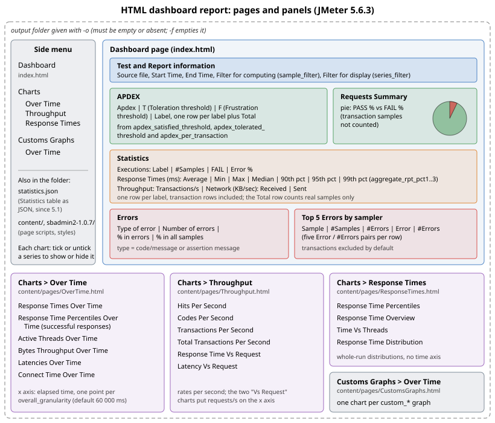

HTML Dashboard Report
|
This content was generated with the assistance of AI and should be verified against the official documentation before being relied on in production. |
This page was written against Apache JMeter 5.6.3, the latest release on 2026-10-14 (it runs on Java 8 and later; Java
17 or later is recommended, and Java 21 is used for the examples). JMeter 6.0 is not released: the changes planned for it
come from xdocs/changes.xml on the master branch, need Java 17 or later (Java 21 recommended) and are described as
planned, not as shipped behaviour. The dashboard itself has no plugin dependency, so the JMeter Plugins Manager 2.0,
jmeter-maven-plugin 3.8.x and gRPC Request plugin 2.0.x versions used elsewhere in this section only matter here because
their samples end up in the same results file. The books on the market describe either GUI listeners and plugin graphs
(JMeter 2.11 and 2.12) or the first version of the dashboard (JMeter 3.0); the dashboard has gained several charts,
tables, filters and a JSON export since. Every property, default, column name and command on this page is taken from the
official user manual (chapter 14, Generating Report Dashboard), the properties reference and the change log. Where the
manual is silent, the behaviour is read from the 5.6.3 source code, which is said explicitly.
The HTML dashboard is where most JMeter runs end. It turns the CSV results file of a run into a static web site with summary tables (APDEX, statistics, errors) and about twenty charts, without a single listener in the test plan. This page explains how to produce it, what it needs from the results file, how to configure it, and then walks through every view for one Bookshelf load run, saying what each number means and what to look for.
What the dashboard is and where it sits
The dashboard generator is a post-processor of results files, not a test element. It never appears in the test plan tree and never runs during the load. It reads a CSV results file (a JTL in CSV format), pushes every sample through a chain of filters and consumers that compute statistics and time series, and then exports the result through a template into HTML pages. The user manual calls it "a modular extension of JMeter" that by default reads CSV samples and can run at the end of a load test or on demand.
That design has three consequences that shape everything else on this page:
-
It only knows what the results file contains. A column that was not saved cannot be graphed, and a sample that was not written (for example because a listener filtered it) does not exist for the report.
-
It can be regenerated at will. The same JTL file can produce many reports with different thresholds, filters, granularities and date ranges, without rerunning the test.
-
It costs the load generator nothing during the run when it is generated afterwards with
-g. When it is generated with-eat the end of a CLI run, it runs in the same JVM after the test has stopped, so it does not distort the measurements either; it only needs enough heap to process the file.
In the life of a load test it sits after the run and before the analysis:
The generated folder has a fixed structure: a Dashboard page with the tables, three chart pages (Over Time, Throughput,
Response Times), a Customs Graphs page, the static assets and, since 5.1, a statistics.json file with the Statistics
table in machine-readable form.

The dashboard replaces the GUI listeners for reporting. The Summary Report, Aggregate Report and graph listeners are convenient while building a plan in the GUI, but they cost CPU and memory during a run and their numbers vanish when the GUI closes. Listeners & Results Files covers what to keep in the plan and how the JTL file is written; this page starts from that file.
Prerequisites: what the results file must contain
CSV output format
The generator only reads CSV. If jmeter.save.saveservice.output_format is set to xml, report generation fails at
once with the 5.6.3 message
Report generation requires csv output format, check 'jmeter.save.saveservice.output_format' property.
CSV is the default, so this only bites plans or user.properties files that switched to XML to keep response data, which should not be done in load tests anyway.
Save-service fields
The manual lists the save-service settings the generator relies on. They are all defaults in 5.6.3, so the requirement is really "do not turn them off". The table shows each one, its default and the parts of the report that need it.
| Property | Default | Used by |
|---|---|---|
|
|
Received column of the Statistics table, Bytes Throughput Over Time. |
|
|
Sent column of the Statistics table and the sent series of Bytes Throughput Over Time (the manual notes sent bytes are only available with the HttpClient4 implementation for HTTP). |
|
|
Every per-label row and series. Without labels nothing can be grouped. |
|
|
Latencies Over Time, Latency Vs Request. |
|
|
Connect Time Over Time. |
|
|
Codes Per Second, the error type in Errors and Top 5 Errors. |
|
|
Error types, and the detection of Transaction Controller samples (the generator recognises a transaction sample by its
response message, which starts with |
|
|
Pass/fail everywhere: APDEX, Requests Summary, error columns, success and failure series. |
|
|
Active Threads Over Time, Time Vs Threads. |
|
|
Active Threads Over Time (one series per thread group, derived from the thread name). |
|
|
Every response-time figure. |
|
|
Assertion messages as error types in Errors and Top 5 Errors. |
|
|
The time axis of every over-time chart and the date filters. The manual requires a format that includes the time and recommends one that includes the date; the default, milliseconds since the epoch, is the safest. |
Source: Generating Report Dashboard: Save Service configuration (User Manual) and Properties Reference: Results file configuration
Two related properties are worth knowing:
-
jmeter.save.saveservice.print_field_names(defaulttrue) writes the CSV header line. Keep it: the header lets the generator map columns, including the extra columns added bysample_variables. -
sample_variables(not set by default;jmeter.propertiesonly showsSESSION_ID,REFERENCEas a commented-out example) appends the listed JMeter variables as extra CSV columns. Custom graphs can only plot a variable that was saved this way, so it must be set before the run, inuser.propertiesor with-J.
Transaction Controllers
The dashboard handles transaction samples specially: some views include them, some ignore them and some let you choose. The manual gives two rules for the most accurate results:
-
Leave Generate parent sample unticked on every Transaction Controller (the default). In parent mode the child samples become sub-results of the transaction sample and disappear from the CSV file as separate rows, so the request rows the report is built from would be missing.
-
If a Transaction Controller groups the requests of one page and only the transaction should appear in the report, right-click the controller and choose Apply Naming Policy. The children are renamed after the parent with a numeric suffix (
TX Search only-0,TX Search only-1in the Bookshelf plan), which makes them easy to filter out, as the filtering section below shows.
The Bookshelf plan follows the first rule: every Transaction Controller is written with
TransactionController.parent set to false, and with TransactionController.includeTimers set explicitly, as
Logic Controllers & Transactions recommends.
Distributed runs
In a distributed run the controller writes one results file for all engines. Since 5.0 JMeter prefixes thread names with the engine host and port, so Active Threads Over Time counts the threads of every engine correctly without extra configuration. The manual still warns about one limitation: Time Vs Threads uses the number of threads for one server on its horizontal axis. Distributed testing itself is covered later in this section.
Generating the report
There are three ways to produce a dashboard. All of them use the same generator and the same properties.
| Way | Command or menu | Typical use |
|---|---|---|
At the end of a CLI run |
|
Every real load test: the report is ready when the run ends. |
From an existing results file |
|
Re-generating with other thresholds, filters or date range; generating on another machine; reports for files merged or produced by CI. |
From the GUI |
Tools → Generate HTML report |
Occasional use on a workstation, without a terminal. |
At the end of a CLI run: -e -o
Run the Bookshelf load profile (50 threads, 60 s ramp-up, 660 s scheduler duration, so a 10-minute hold) and generate
the dashboard in the same command. -e asks for the report at the end of the run, -o names the output folder, and
-l is mandatory with -e (without it JMeter refuses to start with Option -e requires -l option).
cd bookshelf-perf
jmeter -n -t bookshelf-load.jmx \
-Jthreads=50 -Jrampup=60 -Jduration=660 -Jhost=localhost -Jport=8080 \
-l load.jtl -j load.log \
-e -o report-loadCreating summariser <summary>
Created the tree successfully using bookshelf-load.jmx
Starting standalone test @ 2026 Oct 14 10:00:00 CEST (1791964800000)
Waiting for possible Shutdown/StopTestNow/HeapDump/ThreadDump message on port 4445
summary + 193 in 00:00:28 = 6.9/s Avg: 131 Min: 19 Max: 612 Err: 0 (0.00%) Active: 24 Started: 24 Finished: 0
summary + 445 in 00:00:30 = 14.8/s Avg: 138 Min: 21 Max: 701 Err: 1 (0.22%) Active: 50 Started: 50 Finished: 0
summary = 638 in 00:00:58 = 11.0/s Avg: 136 Min: 19 Max: 701 Err: 1 (0.16%)
...
summary = 9798 in 00:11:00 = 14.8/s Avg: 143 Min: 19 Max: 5012 Err: 40 (0.41%)
Tidying up ... @ 2026 Oct 14 10:11:01 CEST (1791965461000)
... end of runThe numbers are illustrative; they are the same run that is analysed in the walk-through below. Nothing about the
report appears on the console: the generator logs Generating Dashboard and Dashboard generated to load.log, and
only a failure is printed (Error generating the report: ...). Check the log, or simply the folder:
ls report-load report-load/content/pagescontent index.html sbadmin2-1.0.7 statistics.json
report-load/content/pages:
CustomsGraphs.html OverTime.html ResponseTimes.html Throughput.html icon-apache.pngOpen report-load/index.html in a browser. The report is static: it can be zipped, archived as a CI artifact or served
from any web server.
Two safety checks protect earlier results, and both are a frequent cause of "the report was not generated":
-
The results file must be empty or absent when
-eis used. A leftoverload.jtlfrom a previous run makes the generator refuse withResults file:load.jtl is not empty, because mixing two runs would produce a meaningless report. -
The output folder must be empty or absent. Otherwise the run fails with
Cannot write to '.../report-load' as folder is not empty. Since 5.0 the-f(--forceDeleteResultFile) option deletes both the results file and the contents of the-ofolder before the test starts.
jmeter -n -t bookshelf-load.jmx -Jthreads=50 -Jrampup=60 -Jduration=660 \
-f -l load.jtl -e -o report-loadA better habit for anything that must be compared later is a fresh, dated folder per run, for example
-l results/2026-10-14-load.jtl -o results/2026-10-14-load-report, rather than -f.
From an existing results file: -g -o
-g (--reportonly) generates a report from a results file and does nothing else; no test plan is needed. Because the
CLI run above kept load.jtl, the same data can be reported again, for example with stricter APDEX thresholds and a
10-second granularity:
jmeter -g load.jtl -o report-load-10s \
-Jjmeter.reportgenerator.overall_granularity=10000 \
-Jjmeter.reportgenerator.apdex_satisfied_threshold=300 \
-Jjmeter.reportgenerator.apdex_tolerated_threshold=1200The file must be readable (Cannot read test results file : ... otherwise) and, again, the output folder must be empty
or absent. A run that crashed or was killed usually leaves a valid JTL up to the last flushed line, so -g is also the
way to get a report from an interrupted test.
The properties can just as well come from a file with -q, which keeps report settings under version control next to
the plan:
jmeter -g load.jtl -o report-load-steady -q report-steady.propertiesFrom the GUI: Tools → Generate HTML report
Since 5.1.1 the GUI has a dialog for the same operation (Tools → Generate HTML report). Its fields are:
| Field | Meaning | Required |
|---|---|---|
Results file (csv or jtl) |
The CSV results file of a run. |
Yes |
user.properties file |
The |
Yes |
Output directory |
Where the report is written. It must be empty. If no folder is given, the report goes to
|
No |
Click Generate report and wait for the information dialog (Report created ! on success). The GUI does not generate
the report in its own JVM: in 5.6.3 it starts a separate java -jar ApacheJMeter.jar process with the options -q
(the chosen user.properties), -g (the results file), -j (a log file) and -o (the folder), and waits for it. The
wait is bounded by generate_report_ui.generation_timeout, in milliseconds. The user manual tells you to raise it if
generation takes more than two minutes; the properties reference and the 5.6.3 source give its default as 300000
(five minutes). For a large file, set it in user.properties before starting the GUI:
# allow up to 15 minutes for Tools > Generate HTML report
generate_report_ui.generation_timeout=900000The same menu has a companion item, Tools → Export transactions for report (added to the Help menu in 3.3 and moved
to the Tools menu introduced in 5.1), which builds a ready-made series_filter value from the Transaction Controller and
sampler names in the open plan. It is described in the filtering section below.
Errors you will meet
| Message (5.6.3) | Cause | Fix |
|---|---|---|
|
|
Add |
|
|
Use a new file name, or |
|
The |
Use a new folder, or |
|
|
Check the path; relative paths are resolved from the current directory. |
|
|
Switch back to CSV for load tests. |
Empty charts, or a chart that shows a message about filters |
A |
Check the regular expressions against the labels in the JTL; see the filtering section. |
Configuring the report
Where the settings live
All report settings are JMeter properties whose names start with jmeter.reportgenerator.. Their defaults live in
bin/reportgenerator.properties, which, like jmeter.properties, should not be edited: its own header says to copy a
property to user.properties and change it there, so upgrades do not wipe the change. The 5.6.3 generator first loads
bin/reportgenerator.properties and then merges every JMeter property over it, so the effective precedence is:
-
bin/reportgenerator.properties(shipped defaults); -
bin/jmeter.properties, thenbin/user.propertiesand any-qfile; -
-Joptions on the command line (and-Gin distributed runs).
A property can reference another one with the ${...} syntax. The shipped file does exactly that: every over-time
chart sets its granularity to ${jmeter.reportgenerator.overall_granularity}, which is why changing one property
changes all of them.
General settings
Every general setting, with its default in 5.6.3:
Property (prefix jmeter.reportgenerator.) |
Default | Meaning |
|---|---|---|
|
|
Title shown in the browser tab and the page header. |
|
|
|
|
empty |
Only samples that start at or after this date are used. Empty means from the beginning. |
|
empty |
Only samples that start at or before this date are used. Empty means until the end. |
|
|
Width in milliseconds of one point on the over-time charts. Must be greater than 1000, otherwise the throughput charts are wrong (Bug 60149). |
|
|
APDEX satisfied threshold in ms. |
|
|
APDEX tolerated threshold in ms. |
|
empty |
Per-label thresholds, described below. |
|
empty |
Regular expression; only samples whose label matches it are used for all graphs and statistics. Empty means no filtering. |
|
|
Temporary directory for file operations during generation. |
|
|
Size of the sliding window used to compute percentiles. Larger values are more accurate and use more memory. |
|
|
Leave Transaction Controller samples out of the Top 5 Errors by sampler table (shipped in |
|
see text |
Regular expression used by Tools → Export transactions for report to skip children renamed by Apply Naming Policy. |
The Statistics table and the percentile charts use three percentiles set by properties without the
jmeter.reportgenerator. prefix: aggregate_rpt_pct1 (default 90), aggregate_rpt_pct2 (95) and
aggregate_rpt_pct3 (99). Relative paths in report properties are resolved from the JMeter working directory, which is
bin by default.
Source: Generating Report Dashboard: General settings (User Manual),
Properties Reference: Reporting configuration
and the 5.6.3 bin/reportgenerator.properties
APDEX thresholds, global and per transaction
APDEX turns a set of response times into a score between 0 and 1. Each successful sample is satisfied if its elapsed time is at or below the satisfied threshold, tolerating if it is at or below the tolerated threshold, and frustrated otherwise; the score is (satisfied + tolerating / 2) / total. Performance Testing Fundamentals explains the index itself. Two details of the JMeter implementation, read from the 5.6.3 source, matter when reading the table:
-
Failed samples count in the total but are never satisfied or tolerating, so every error is a frustrated sample. A fast 500 response lowers the score as much as a very slow success.
-
Empty transaction samples are skipped, for example a Transaction Controller whose children did not run because an If Controller was false.
The global thresholds apply to every label unless apdex_per_transaction overrides them. Its format, from the manual,
is sample_name:satisfied|tolerated, with entries separated by ;, values in milliseconds, and the name being either
a literal label or a regular expression. Lines are continued with a trailing backslash.
The Bookshelf requirements give the search a tighter target than the rest (the same 800 ms limit that the Duration
Assertion checks through the search_sla_ms run property), and judge whole journeys more leniently than single
requests:
# user.properties next to bookshelf-load.jmx
# default for every label
jmeter.reportgenerator.apdex_satisfied_threshold=500
jmeter.reportgenerator.apdex_tolerated_threshold=1500
# search: satisfied up to 300 ms, tolerated up to 800 ms (the search_sla_ms limit)
# transactions (labels starting with "TX "): satisfied up to 1 s, tolerated up to 3 s
jmeter.reportgenerator.apdex_per_transaction=GET /api/books \\(search\\):300|800;\
TX .*:1000|3000The names are regular expressions and must match the whole label (the 5.6.3 code uses matches(), not find()), so:
-
TX .*matches every transaction label of the plan, andTXalone would match none; -
the parentheses in
GET /api/books (search)are regex metacharacters and must be escaped, and in a properties file the backslash itself must be doubled, hence\\((the manual examplesample(\\d+)shows the same doubling); -
a label such as
GET /api/books/{id}needs its braces escaped too (\\{id\\}), because{starts a repetition in a regular expression; -
if two entries match the same label, the 5.6.3 code picks one without a defined order (the entries are kept in a hash map), so keep the expressions disjoint.
The thresholds in force are printed in the APDEX table itself, one row per label, which is the quickest way to check
that an override matched. The shipped reportgenerator.properties shows an example that separates its first two
entries with a comma; the manual, the change log and the unit test in the source all use semicolons, and the parser
splits on ; only, so use semicolons.
Worked example. Over the run, GET /api/books (search) produced 3,330 samples: 3,060 at or under 300 ms, 232 between
301 and 800 ms, and 38 frustrated (20 slower than 800 ms plus 18 failures). Its APDEX is
(3,060 + 232 / 2) / 3,330 = 3,176 / 3,330 = 0.954. With the default 500/1500 thresholds the same samples would score
about 0.98, which is why thresholds must come from requirements, not from the defaults.
Source: Generating Report Dashboard: General settings (User Manual) and Changes history (3.2, Bug 60112)
Granularity of the over-time charts
overall_granularity sets the width of one time bucket on every over-time chart. All samples whose timestamp falls in a
bucket are aggregated into one point: an average for response times, latencies, connect times and active threads, a
rate per second for hits, codes, transactions and bytes.
Worked numbers for the Bookshelf run (660 s):
overall_granularity |
Points per series | What it shows |
|---|---|---|
|
11 |
The overall trend only. The 60 s ramp-up is one point, and a one-minute incident is averaged into one point with the normal seconds around it. |
|
66 |
Ramp-up in six steps, short incidents visible. A good default for runs of 10 to 60 minutes. |
|
132 |
Fine detail; noisy for labels with few samples ( |
|
660 or more |
Not allowed: the manual states the granularity must be greater than 1000 ms, otherwise the throughput charts are wrong. |
For a soak test of several hours the default of 60 s is reasonable; for a 10-minute load test 10 s is better. Individual
charts can override the global value with their own property.set_granularity, and the Response Time Distribution
uses a different kind of granularity: the width of its histogram buckets, 100 ms by default.
jmeter.reportgenerator.overall_granularity=10000
# histogram buckets of 50 ms instead of 100 ms
jmeter.reportgenerator.graph.responseTimeDistribution.property.set_granularity=50Percentiles and the estimator
The Statistics table shows three percentiles, by default the 90th, 95th and 99th. Change them with aggregate_rpt_pct1,
aggregate_rpt_pct2 and aggregate_rpt_pct3; the same properties drive the Aggregate Report listener, the Response
Time Percentiles Over Time chart and the column headings (90th pct and so on). Since 5.3 the values may have decimals,
so a 99.9th percentile is possible:
aggregate_rpt_pct1=50
aggregate_rpt_pct2=95
aggregate_rpt_pct3=99.9The manual warns that the dashboard’s percentiles can differ from the Aggregate Report’s, because the dashboard uses a
different estimator. The difference is visible when the distribution is wide and there are few samples. Since 5.5 the
estimator is configurable: backend_metrics_percentile_estimator=R_3 (no prefix) makes the dashboard agree with the
Aggregate Report; the default is LEGACY. Percentiles are computed over a sliding window of statistic_window samples
(20,000 by default); a label with more samples than the window gets an approximation that improves with a larger window
at the cost of memory. Percentiles versus averages
explains why the percentiles, not the average, carry the verdict.
Filtering: sample_filter versus series_filter
The generator has two kinds of filter, applied at different points, with different effects.
jmeter.reportgenerator.sample_filter |
jmeter.reportgenerator.exporter.html.series_filter |
|
|---|---|---|
When it applies |
Before any calculation: samples whose label does not match are discarded. |
After the calculation: it only hides series (chart lines) and rows (table lines). |
Effect on totals |
Changes them: the Total rows, APDEX Total, Requests Summary and every chart only see the kept samples. |
None: totals are computed on all samples; only the display changes. |
Format |
Regular expression matched against the whole label. |
Regular expression that, if not empty, should end with |
Shown in the report as |
"Filter for computing" in Test and Report information. |
"Filter for display" in Test and Report information. |
The suffix rule exists because some charts (Transactions Per Second, Total Transactions Per Second, Response Time Vs
Request) name their series <label>-success and <label>-failure. A filter that matches only the bare label would hide
them. The manual’s example keeps the series of two transactions:
jmeter.reportgenerator.exporter.html.series_filter=^(Search|Order)(-success|-failure)?$Two more exporter properties refine the display filter:
-
jmeter.reportgenerator.exporter.html.filters_only_sample_series(defaulttrue): applyseries_filteronly to series that represent samples, so aggregate series such as the totals stay visible. -
jmeter.reportgenerator.exporter.html.show_controllers_only(defaultfalse): on charts and tables that can tell transaction samples from request samples, show only the transaction samples.
The manual’s tables of discarding rules reduce to this: a series that matches series_filter is still discarded if
show_controllers_only is true, the chart supports controller discrimination and the series is not a controller; a
series that does not match is still kept if filters_only_sample_series is true and the chart does not support
controller discrimination. Two configurations produce empty charts: show_controllers_only=true on a chart configured to
exclude controllers, and a series_filter that matches no series.
Excluding Transaction Controller children
A Bookshelf report with every label has nine rows: five requests and four transactions. For a business audience the four journeys are enough; for a developer the requests matter. The generator offers four ways to show only the transactions, with different consequences:
| Approach | Setting | Effect |
|---|---|---|
Display only the transactions |
|
Charts and tables that support it show only transaction series. Totals still include every request. Charts that never show controllers (Hits Per Second, Codes Per Second, Bytes Throughput) are unaffected. |
Display an explicit list |
|
Only the listed labels appear; totals unchanged. |
Drop the children before computing |
|
The report is computed from transaction samples alone. Requests vanish from every view, including Hits Per Second and the Errors tables, which then become empty because they ignore transaction samples. |
Rename the children, then filter |
Apply Naming Policy on each Transaction Controller, then a filter that excludes the |
Works with any of the three above; makes child labels predictable. |
For the Bookshelf plan the display filter is the most useful option, because it keeps the request rows in the totals and in the error tables:
jmeter.reportgenerator.exporter.html.series_filter=^(TX Login|TX Search only|TX Browse and borrow|TX Login heavy)(-success|-failure)?$Tools → Export transactions for report generates such a line from the open plan. It collects the names of every
Transaction Controller and sampler (except Flow Control Action and Debug Sampler) whose name does not look like a
renamed child, joins them with | and shows the result in a dialog titled Export Transactions Result, ready to paste
into user.properties. The pattern that recognises renamed children is exported_transactions_pattern; by default it
matches a name followed by - and digits, which is what Apply Naming Policy produces.
Start and end date: reporting the steady state only
A closed-model run includes a ramp-up and a ramp-down that are not representative of the load being tested. The
dashboard can be restricted to a time window with start_date and end_date, parsed with date_format. The filter
uses each sample’s start time and is applied before any calculation, so it changes every table and chart.
The Bookshelf run started at 10:00:00 local time with a 60 s ramp-up and ended at 10:11:00. To report only the 10-minute hold, minus the last few seconds when threads stop:
# report-steady.properties
jmeter.reportgenerator.report_title=Bookshelf load 2026-10-14: steady state
jmeter.reportgenerator.date_format=yyyyMMddHHmmss
jmeter.reportgenerator.start_date=20261014100100
jmeter.reportgenerator.end_date=20261014101055
jmeter.reportgenerator.overall_granularity=10000jmeter -g load.jtl -o report-load-steady -q report-steady.propertiesThe dates are interpreted in the JVM’s default time zone unless the format includes one. When a report is generated on a CI runner in UTC from a file recorded in another zone, add the zone to both the format and the values:
jmeter.reportgenerator.date_format=yyyy-MM-dd HH:mm:ss zzz
jmeter.reportgenerator.start_date=2026-10-14 10:01:00 CEST
jmeter.reportgenerator.end_date=2026-10-14 10:10:55 CESTThe steady-state report has fewer samples (about 8,900 instead of 9,798) and a slightly higher throughput, because the ramp-up seconds with few threads are gone. Compare reports of different runs only when they cover equivalent windows.
Source: Generating Report Dashboard: General settings (User Manual) and Changes history (3.1, Bug 59956)
Graph settings and the default graphs
Each chart is declared by a group of properties with the prefix jmeter.reportgenerator.graph.<graph_id>.. The manual
notes that, in this early design, every default graph must be declared in properties, otherwise its view is empty; the
declarations ship in reportgenerator.properties. Every graph supports:
| Property | Meaning | Required |
|---|---|---|
|
Fully qualified class of the graph; it must extend |
Yes |
|
Whether the graph discards Transaction Controller samples. Default |
No |
|
Title of the chart. Default empty. |
No |
|
Specific settings: the name is converted to camel case and the matching setter is called, so
|
No |
The exporter can also override the axes of a chart with
jmeter.reportgenerator.exporter.html.graph_options.<graph_id>.minX, maxX, minY and maxY, which is useful to give
reports of several runs the same scale.
The graphs declared in the 5.6.3 reportgenerator.properties (all classes in org.apache.jmeter.report.processor.graph.impl):
| Graph id | Class | Page | exclude_controllers |
|---|---|---|---|
|
|
Over Time |
not set (false) |
|
|
Over Time |
not set |
|
|
Over Time |
not set |
|
|
Over Time |
|
|
|
Over Time |
not set |
|
|
Over Time |
not set |
|
|
Throughput |
|
|
|
Throughput |
|
|
|
Throughput |
not set |
|
|
Throughput |
not set |
|
|
Throughput |
|
|
|
Throughput |
|
|
|
Response Times |
not set |
|
|
Response Times (Response Time Overview) |
|
|
|
Response Times |
not set |
|
|
Response Times |
not set |
Two exporters are declared: html (org.apache.jmeter.report.dashboard.HtmlTemplateExporter, with template_dir
default report-template and output_dir default report-output, overridden by -o) and json
(org.apache.jmeter.report.dashboard.JsonExporter, which writes statistics.json).
To rename a chart, override its title; to drop a chart’s transaction series, set exclude_controllers:
jmeter.reportgenerator.graph.responseTimesOverTime.title=Bookshelf response times over time
jmeter.reportgenerator.graph.responseTimesOverTime.exclude_controllers=true
# same y scale on every report of the campaign
jmeter.reportgenerator.exporter.html.graph_options.responseTimesOverTime.maxY=2000Custom graphs with CustomGraphConsumer
Since 5.0 the dashboard can plot any numeric column of the results file over time, including JMeter variables saved
with sample_variables. Each custom graph is declared with a graph id that starts with custom_ and the class
org.apache.jmeter.report.processor.graph.impl.CustomGraphConsumer, and appears on the Customs Graphs page. Its
specific properties are:
Property (after property.) |
Meaning | Required |
|---|---|---|
|
Name of the X axis. |
Yes |
|
Name of the Y axis. |
Yes |
|
Text shown in the tooltip when the cursor is on a point. |
Yes |
|
Name of the CSV column (variable) to plot. |
Yes |
|
Bucket width in ms, as for the other over-time charts. |
No |
The values of each bucket are averaged. Empty values and the literal null are skipped; a value that is not a number
makes the generation fail (5.6.3 source). Besides saved variables, a custom graph can plot the native numeric columns of
the CSV file, such as Latency, Connect or IdleTime.
Bookshelf example: hits per search. The search response has the form
{"items":[...],"total":17}. A JSON Extractor on the search sampler stores total in a variable, the variable is
saved in the results file, and a custom graph plots it, which shows whether the search terms in search-terms.csv
return comparable result sizes over the run.
Add Add → Post Processors → JSON Extractor under GET /api/books (search):
<JSONPostProcessor guiclass="JSONPostProcessorGui" testclass="JSONPostProcessor" testname="Extract searchTotal">
<stringProp name="JSONPostProcessor.referenceNames">searchTotal</stringProp>
<stringProp name="JSONPostProcessor.jsonPathExprs">$.total</stringProp>
<stringProp name="JSONPostProcessor.match_numbers">1</stringProp>
<stringProp name="JSONPostProcessor.defaultValues">null</stringProp>
</JSONPostProcessor>
<hashTree/>Then, in user.properties (the sample_variables line must be in place before the run):
# saved as an extra CSV column for every sample
sample_variables=searchTotal
jmeter.reportgenerator.graph.custom_searchTotal.classname=org.apache.jmeter.report.processor.graph.impl.CustomGraphConsumer
jmeter.reportgenerator.graph.custom_searchTotal.title=Bookshelf: books found per search
jmeter.reportgenerator.graph.custom_searchTotal.property.set_X_Axis=Over Time
jmeter.reportgenerator.graph.custom_searchTotal.property.set_Y_Axis=Books found (average)
jmeter.reportgenerator.graph.custom_searchTotal.property.set_Content_Message=Books found :
jmeter.reportgenerator.graph.custom_searchTotal.property.set_Sample_Variable_Name=searchTotal
jmeter.reportgenerator.graph.custom_searchTotal.property.set_granularity=${jmeter.reportgenerator.overall_granularity}Three details matter. First, the manual’s own example writes set_X_Axis without the property. segment; the other
specific properties use property., which is the documented form for graph-specific settings, so it is used for all of
them here. Second, the default value null makes failed extractions invisible on the chart instead of plotting a fake
zero. Third, a JMeter variable keeps its value until it is overwritten, and sample_variables writes the current
value with every sample of the thread, so the view-book and loan samples that follow a search carry the same
searchTotal. The chart is therefore a weighted trend, good for spotting a change in data, not an exact per-search
average; for exact numbers, compute them from the JTL file restricted to the search label.
The complete Bookshelf report configuration
Everything above, collected in the user.properties that lives next to bookshelf-load.jmx:
# ---- results file: what the dashboard needs (all defaults, stated for clarity) ----
jmeter.save.saveservice.output_format=csv
jmeter.save.saveservice.timestamp_format=ms
jmeter.save.saveservice.assertion_results_failure_message=true
sample_variables=searchTotal
# ---- report ----
jmeter.reportgenerator.report_title=Bookshelf API load test
jmeter.reportgenerator.overall_granularity=10000
jmeter.reportgenerator.apdex_satisfied_threshold=500
jmeter.reportgenerator.apdex_tolerated_threshold=1500
jmeter.reportgenerator.apdex_per_transaction=GET /api/books \\(search\\):300|800;\
TX .*:1000|3000
aggregate_rpt_pct1=90
aggregate_rpt_pct2=95
aggregate_rpt_pct3=99
# same percentiles as the Aggregate Report listener
backend_metrics_percentile_estimator=R_3
# ---- custom graph ----
jmeter.reportgenerator.graph.custom_searchTotal.classname=org.apache.jmeter.report.processor.graph.impl.CustomGraphConsumer
jmeter.reportgenerator.graph.custom_searchTotal.title=Bookshelf: books found per search
jmeter.reportgenerator.graph.custom_searchTotal.property.set_X_Axis=Over Time
jmeter.reportgenerator.graph.custom_searchTotal.property.set_Y_Axis=Books found (average)
jmeter.reportgenerator.graph.custom_searchTotal.property.set_Content_Message=Books found :
jmeter.reportgenerator.graph.custom_searchTotal.property.set_Sample_Variable_Name=searchTotal
jmeter.reportgenerator.graph.custom_searchTotal.property.set_granularity=${jmeter.reportgenerator.overall_granularity}JMeter reads user.properties from the bin directory by default; to keep it with the plan, pass it with -q
user.properties, or put the report settings in a separate file such as report-steady.properties and pass that one to
-g runs only.
Walking through the dashboard: a Bookshelf load run
The rest of the page reads one report view by view. The run is the Bookshelf load profile from this section: 50
threads in the Bookshelf users Thread Group, 60 s ramp-up, scheduler duration 660 s, a 3 s think time, the 60/30/10
mix of search-only, browse-and-borrow and login-heavy journeys, against a local Bookshelf API. The report was generated
with the configuration above (10 s granularity). The numbers are illustrative but internally consistent; they include
one planted incident, a database connection pool that saturates for about a minute around 10:07, so that each view has
something to show.
The expectation before reading anything, from Little’s Law: with 50 threads, a 3 s think time and about 0.2 s per request, the plan should sustain roughly 50 / 3.2 = 15.6 requests per second at full load. The report should confirm or contradict that.
Test and Report information
The first panel states what the report is about: Source file (load.jtl), Start Time and End Time of the samples
used, and, when set, Filter for computing (sample_filter) and Filter for display (series_filter).
What to check:
-
Duration. 10:00:00 to 10:11:00 is the 660 s the scheduler was given. A shorter span means the test stopped early (an error action, a crash, a CSV file with Stop thread on EOF); a longer one means threads did not stop on time.
-
Filters. A report someone else generated may hide labels. The two filter lines are the only place where that is visible.
-
Source file. In CI, confirm the report belongs to the run being discussed.
APDEX
One row per label, plus Total, with four columns: Apdex, T (Toleration threshold), F (Frustration threshold) and Label. Despite their headings, T holds the satisfied threshold and F the tolerated threshold in force for that row (the headings follow the APDEX naming, where T is the target time and F the frustration limit).
| Apdex | T (ms) | F (ms) | Label |
|---|---|---|---|
0.956 |
500 |
1500 |
Total |
0.999 |
500 |
1500 |
|
0.998 |
500 |
1500 |
|
0.992 |
500 |
1500 |
|
0.990 |
1000 |
3000 |
|
0.988 |
1000 |
3000 |
|
0.972 |
500 |
1500 |
|
0.968 |
1000 |
3000 |
|
0.958 |
1000 |
3000 |
|
0.954 |
300 |
800 |
|
How to read it for Bookshelf:
-
The overrides matched. The search row shows 300/800 and the
TXrows 1000/3000; every other label shows the defaults. If a row you meant to override shows 500/1500, the regular expression did not match the whole label. -
Search is the weakest label, and it has the strictest threshold. Its score of 0.954 is (3,060 + 232 / 2) / 3,330: most searches are fast, a few percent are tolerable, and 38 are frustrated, 18 of them because they failed.
-
POST /api/loansscores 0.972 while being fast (median under 200 ms): its 22 failures (409 Conflict) are frustrated samples. A low APDEX with good percentiles points at errors, not at slowness. -
The Total row is not a weighted average of the rows above. In 5.6.3 it counts every sample, transaction samples included, and judges all of them against the global thresholds (500/1500), ignoring the per-transaction overrides. Use it as a headline only; base the verdict on the rows of the labels that carry requirements.
Requests Summary
A pie chart with two slices, PASS and FAIL (named OK and KO before 5.4), as percentages of all request samples. Transaction samples are not counted, so a failing request is not counted twice through its transaction.
For the run: 9,758 passed and 40 failed out of 9,798 samples, so FAIL is 0.41 %. Two questions follow. Is 0.41 % within the error budget of the requirements? And are the 40 errors spread over the run, or concentrated in the incident? The pie cannot answer the second question; Codes Per Second and Response Times Over Time can.
Statistics
The central table, with column groups Executions (Label, #Samples, FAIL, Error %), Response Times (ms) (Average, Min, Max, Median, 90th pct, 95th pct, 99th pct), Throughput (Transactions/s) and Network (KB/sec) (Received, Sent). It has one row per label, transaction rows included, and a Total row. The table can be sorted by any column by clicking its heading.
| Label | #Samples | FAIL | Error % | Avg | Min | Max | Med | 90th | 95th | 99th | Trans/s | Recv | Sent |
|---|---|---|---|---|---|---|---|---|---|---|---|---|---|
Total |
9,798 |
40 |
0.41 % |
143 |
19 |
5,012 |
118 |
245 |
318 |
702 |
14.85 |
30.5 |
7.7 |
|
3,330 |
18 |
0.54 % |
168 |
41 |
5,012 |
142 |
268 |
356 |
912 |
5.05 |
20.2 |
2.0 |
|
3,330 |
0 |
0.00 % |
96 |
22 |
1,104 |
84 |
151 |
188 |
402 |
5.05 |
7.6 |
1.9 |
|
1,370 |
22 |
1.61 % |
214 |
63 |
1,980 |
188 |
342 |
421 |
806 |
2.08 |
1.2 |
1.9 |
|
1,348 |
0 |
0.00 % |
88 |
19 |
690 |
77 |
139 |
170 |
333 |
2.04 |
1.0 |
1.6 |
|
420 |
0 |
0.00 % |
262 |
141 |
1,233 |
238 |
371 |
432 |
911 |
0.64 |
0.5 |
0.3 |
|
2,220 |
12 |
0.54 % |
264 |
71 |
5,140 |
231 |
398 |
512 |
1,206 |
3.36 |
0 |
0 |
|
1,110 |
22 |
1.98 % |
566 |
190 |
5,402 |
518 |
788 |
921 |
1,688 |
1.68 |
0 |
0 |
|
370 |
6 |
1.62 % |
564 |
260 |
2,410 |
521 |
790 |
902 |
1,610 |
0.56 |
0 |
0 |
|
50 |
0 |
0.00 % |
301 |
196 |
1,233 |
264 |
452 |
611 |
1,233 |
0.08 |
0 |
0 |
How to read it for Bookshelf:
-
The Total row counts requests only. In 5.6.3 transaction samples are excluded from the Total (but listed in their own rows), so 9,798 is the number of HTTP requests, the same as the final
summary =line of the console. -
Throughput matches the model. 14.85 requests per second over the whole run, including the ramp-up and the incident, against the 15.6 expected at full load. A large gap would mean the plan could not generate the intended load (load generator saturated, think time misconfigured) or the server slowed every request down, which in a closed model lowers the throughput by itself.
-
Read percentiles, not averages. The search average of 168 ms looks healthy; its 99th percentile of 912 ms breaks the 800 ms requirement, and its maximum of 5,012 ms is a request that hit the 5 s response timeout. The p99 and the max of the search are where the incident shows up in this table.
-
The mix is right.
TX Search onlyhas 2,220 samples andTX Browse and borrow1,110: 60 % and 30 % of 3,700 iterations, withTX Login heavyat 370 (10 %). Checking the shares here validates the workload model. -
Transaction rows explain the user view.
TX Browse and borrowhas a median of 518 ms for four requests, and its error rate (1.98 %) is the sum of the search errors and the loan conflicts that happened inside it. A transaction fails when any of its children fails. -
Received and Sent are per-label bandwidth in KB/s, not totals. Transaction rows show 0 because transaction samples carry no bytes of their own in default mode. The search dominates received bytes (20.2 of 30.5 KB/s) because its responses are lists.
-
Min values sanity-check the setup. A minimum of 19 ms on a local Docker Compose stack is plausible; a minimum of 0 or 1 ms usually means a sampler failed before sending anything.
Source: Generating Report Dashboard: Overview (User Manual) and the 5.6.3 StatisticsSummaryConsumer, ApdexSummaryConsumer and RequestsSummaryConsumer sources
Errors
One row per type of error, with Number of errors, % in errors and % in all samples. The type is built from the
response code and message (409/Conflict) or, when the response code is a success code but an assertion failed, from
the assertion failure message (with assertion_results_failure_message=true, otherwise the generic Assertion failed).
Transaction samples are not counted.
| Type of error | Number of errors | % in errors | % in all samples |
|---|---|---|---|
|
22 |
55.00 % |
0.22 % |
|
9 |
22.50 % |
0.09 % |
|
3 |
7.50 % |
0.03 % |
|
1 |
2.50 % |
0.01 % |
(five more rows like the one above, each with a different duration) |
1 each |
2.50 % each |
0.01 % each |
How to read it for Bookshelf:
-
Group by cause, not by row. The 409 conflicts are a data problem: two virtual users tried to borrow the last copy of the same book. They are expected in a borrowing scenario and should be modelled (a different
bookIdstrategy, or an assertion that accepts 409 as a business outcome) rather than counted as server failures. -
The 500 errors and the timeouts are the server problem. Together, 12 errors, all on the search, all during the incident minute (Codes Per Second confirms the timing).
-
Duration Assertion failures fragment the table. Each failure message contains the measured time, so every slow search becomes its own error type with a count of 1. Six rows of "operation lasted too long" are one cause: the search exceeded
search_sla_ms. When many such rows appear, read them together or switch the assertion to a fixed message (a JSR223 Assertion can set one).
Top 5 Errors by sampler
One row per sampler that had errors, plus a Total row, with Sample, #Samples, #Errors and five pairs of Error and
#Errors, the five most frequent error types of that sampler. Transaction samples are excluded by default
(exclude_tc_from_top5_errors_by_sampler=true), and since 3.2 the table ignores series_filter, so it always shows
every failing sampler.
| Sample | #Samples | #Errors | Top errors (count) |
|---|---|---|---|
Total |
9,798 |
40 |
|
|
1,370 |
22 |
|
|
3,330 |
18 |
|
This is the table to start from when the error rate is too high: it answers where before what. For Bookshelf it splits the 40 errors cleanly into a loan problem (conflicts on one endpoint) and a search problem (server errors and slow responses on another).
Source: Generating Report Dashboard: Overview (User Manual) and the 5.6.3 ErrorsSummaryConsumer and Top5ErrorsBySamplerConsumer sources
Over Time charts
Every chart on this page has elapsed time on the horizontal axis, one point per overall_granularity bucket, a series
per label that can be ticked or unticked, and zooming by selecting a range. The manual states for each chart whether it
includes transaction samples.
Response Times Over Time (includes transaction samples). The average response time of each label per bucket. For Bookshelf the search line runs flat at about 150 ms, rises to about 600 ms in the 10:07 buckets and comes back; the view-book and loan lines barely move. A rise on one label only points at what that endpoint uses and the others do not (here the search query and its connection pool), whereas a rise on every line at once points at a shared resource (CPU, garbage collection, the network) or at the load generator. Averages smooth spikes away, so confirm on the next chart.
Response Time Percentiles Over Time (successful responses). For the successful samples only: Min, Max, Median and the three configured percentiles per bucket (since 5.1 computed from the samples of each bucket). For Bookshelf the 99th percentile goes from about 900 ms to 1,900 ms in the incident while the median moves from 140 to 400 ms: the tail degrades much more than the middle, the typical signature of queueing for a saturated pool. Because failed samples are excluded, a period with many fast errors can make this chart look better; read it next to Codes Per Second.
Active Threads Over Time. The average number of active threads per bucket, one series per thread group (the series
name is the thread name up to its last space, so Bookshelf users 1-23 counts towards Bookshelf users). For Bookshelf
it climbs from 0 to 50 over the first six 10-second points, stays flat at 50 and drops in the last bucket. This chart
is the proof that the load profile ran as designed: a plateau below 50 means threads ended early, and a slow climb means
the ramp-up was longer than configured. With the default 60 s granularity the whole ramp-up is one point of about 25,
which hides it.
Bytes Throughput Over Time (ignores transaction samples). Bytes received and sent per second. For Bookshelf about 31,000 bytes/s received and 7,900 bytes/s sent at full load, a trivial bandwidth; it dips during the incident because fewer requests complete. On a real network, a received-bytes line that hits a flat ceiling while response times rise is the sign of a saturated link between generator and server.
Latencies Over Time (includes transaction samples). The average latency per bucket: the time from just before the request was sent to just after the first byte of the response arrived. For the small JSON responses of Bookshelf the latency is almost equal to the response time, so the server’s processing time dominates. A large and growing gap between response time and latency would mean the time is spent transferring the body (big payloads, slow network), not computing it.
Connect Time Over Time (includes transaction samples). The average time to establish the TCP connection (and TLS handshake, when used). With keep-alive, most Bookshelf samples reuse a connection and report 0, so the average sits near 1 ms; it moves during the ramp-up when new threads open their first connections. A connect time that climbs under load means the server is slow to accept connections (accept queue, connection limits, a load balancer), a different problem from slow processing.
Source: Generating Report Dashboard: Default graphs (User Manual) and Glossary (User Manual) for latency and connect time
Throughput charts
Hits Per Second (ignores transaction samples). Finished requests per second, the server-side load. For Bookshelf it ramps to about 15.6 per second, matches the Little’s Law estimate, and dips to about 13 in the incident buckets. That dip is the closed-model feedback loop: slower responses keep the same 50 threads busy longer, so they send fewer requests, which hides part of the problem. In an open model the arrival rate would stay at the target and the queue would grow instead; see closed versus open workload models. Since 5.0 embedded resources are counted as hits as well.
Codes Per Second (ignores transaction samples). One series per response code. For Bookshelf: 200 at about 12.5 per
second (searches, book views, logins, loan views), 201 at about 2 per second (created loans), a thin 409 series
spread over the whole run, and a short burst of 500 and of Non HTTP response code: java.net.SocketTimeoutException
at 10:07. The timing settles the question the Requests Summary left open: the server errors belong to the incident, the
conflicts do not.
Transactions Per Second (includes transaction samples). One series per label and outcome, named <label>-success
and <label>-failure. This is the chart that shows business throughput: about 3.6 TX Search only-success, 1.8
TX Browse and borrow-success and 0.6 TX Login heavy-success per second at full load, in the 60/30/10 ratio. A
-failure series that appears only in some buckets locates failures in time per label.
Total Transactions Per Second (since 5.0). The same data summed into two series, Transaction-success and
Transaction-failure. A quick view of whether the failure rate tracks the load or an event.
Response Time Vs Request (excludes transaction samples). The horizontal axis is the overall number of requests per second in a given second, the vertical axis the median response time of the requests completed in that second, with one series for successes and one for failures (5.6.3 source; the manual describes it as median and average). It is the closest the dashboard gets to a scalability curve: a flat cloud means the response time does not depend on the load within the range tested; a cloud that bends upwards at the right is the knee where the server starts to queue. For a constant-load Bookshelf run the points concentrate around 15 to 16 requests per second with medians around 120 ms, and the incident adds a few points at 13 per second with high medians, so the chart says little. It becomes informative for the stress profile, where the load climbs step by step.
Latency Vs Request (excludes transaction samples). The same with latency instead of response time; read it the same way, and compare with the previous chart to separate processing from transfer.
Response Times charts
These charts have no time axis: they describe the distribution of response times over the whole run (or the window set
by start_date and end_date).
Response Time Percentiles (includes transaction samples). For each label, the response time (vertical) at each percentile from 0 to 100 (horizontal). A healthy curve is flat for most of its length and rises only at the far right. For Bookshelf the search curve is flat around 150 ms up to the 90th percentile and then lifts sharply, reaching 912 ms at the 99th: the "hockey stick" of a tail caused by a short incident, not of a uniformly slow endpoint (that would shift the whole curve upwards).
Response Time Overview (excludes transaction samples). A bar chart that puts every request into one of four buckets
using the global APDEX thresholds: Requests having response time ⇐ 500ms, Requests having response time > 500ms
and ⇐ 1500ms, Requests having response time > 1500ms and Requests in error. For Bookshelf about 97 % fall into the
first bar, 2.4 % into the second, a handful into the third, and 40 into the errors bar. It is a one-glance summary for
non-specialists, but note that it ignores apdex_per_transaction: the search is judged against 500 ms here, not 300 ms.
Time Vs Threads (includes transaction samples). The average response time (vertical) for each number of active
threads (horizontal), plus one -aggregated point per label at the average thread count and average response time.
During the 60 s ramp-up of the Bookshelf run each thread count from 1 to 49 occurs for about 1.2 s, with a handful of
samples each, so the left part of the chart is noisy; almost all samples sit at 50 threads. With a stepped stress
profile (Concurrency Thread Group) the same chart shows how response time grows with concurrency. In distributed runs the
horizontal axis counts the threads of one server only.
Response Time Distribution (includes transaction samples). A histogram per label: how many samples fell into each
100 ms bucket (responseTimeDistribution.property.set_granularity). For Bookshelf the view-book distribution is a single
narrow peak at 0 to 100 ms; the search distribution has a main peak at 100 to 200 ms and a second, smaller bump at 300
to 500 ms. Two peaks usually mean two populations: cache hits and misses, two query plans, or, as in this run, two
periods (normal and incident). Narrow the window with start_date and end_date to tell which.
Customs Graphs
The Customs Graphs → Over Time page shows one chart per custom_* graph. For Bookshelf, Bookshelf: books found per
search stays between 15 and 20 for the whole run: the search terms return comparable result sizes, so the response
times of different minutes are comparable too. A sudden drop to 0 would have meant the API returned empty lists (for
example after a failed data load), which makes searches faster and the report misleadingly good.
A reading order
A dashboard has more views than any single question needs. A practical order for a load-test verdict:
-
Test and Report information: right file, right duration, filters known.
-
Active Threads Over Time and Transactions Per Second: the load profile and the mix happened as designed.
-
Statistics: throughput against the model, percentiles of the labels with requirements, error rates.
-
APDEX: thresholds matched; scores of the labels with requirements.
-
Top 5 Errors by sampler, then Errors: where and what.
-
Codes Per Second and Response Time Percentiles Over Time: when, and whether failures and slowness coincide.
-
Response Time Percentiles and Response Time Distribution: the shape of the tail.
The dashboard says what happened on the client side. Why it happened needs server metrics for the same minutes (connection pools, CPU, garbage collection), collected during the run as described in Real-time Monitoring with Backend Listener, and the method of Analyzing Results & Finding Bottlenecks. The dashboard also inherits the limits of the closed model: a stalled server stops threads from sending, so the slowest moments are under-sampled (see coordinated omission).
Using statistics.json in CI
The json exporter writes the Statistics table to statistics.json in the report folder, one object per label plus
Total, with the fields transaction, sampleCount, errorCount, errorPct, meanResTime, medianResTime,
minResTime, maxResTime, pct1ResTime, pct2ResTime, pct3ResTime, throughput, receivedKBytesPerSec and
sentKBytesPerSec. A pipeline can gate on it without parsing HTML:
jq '.["GET /api/books (search)"] | {pct3ResTime, errorPct}' report-load/statistics.json{
"pct3ResTime": 912.0,
"errorPct": 0.5405405
}p99=$(jq '.["GET /api/books (search)"].pct3ResTime' report-load/statistics.json)
awk -v v="$p99" 'BEGIN { exit (v > 800) }' || { echo "search p99 ${p99} ms exceeds 800 ms"; exit 1; }pct1ResTime to pct3ResTime follow aggregate_rpt_pct1 to aggregate_rpt_pct3, so a pipeline that changes the
percentiles must change its checks too. Wiring this into Maven and GitHub Actions is covered later in this section.
Source: Changes history (5.1, Bug 63059) and the 5.6.3
bin/reportgenerator.properties
Load-generator cost
-
During the run: none. No listener is needed for the dashboard; the results file is written by the CLI result collector, the same one
-lalways uses. Removing GUI listeners from the plan is the main saving, and it is covered in Running Tests in CLI Mode. -
After the run, with
-e: memory in the same JVM. The generator reads the whole file once, keeps per-label aggregates and a percentile window ofstatistic_windowsamples per label and per chart that needs one. Plans with hundreds of labels (for example labels that contain IDs) multiply that memory; give such reports their own-grun with a larger heap rather than risk the end of a long test. -
Size of the results file. Each CSV row is roughly 150 to 250 bytes with the default columns. The Bookshelf run writes about 13,500 rows (requests and transactions), a few megabytes. A soak test at 100 requests per second for 8 hours writes about 2.9 million rows, several hundred megabytes, and the generation takes minutes; that is when the GUI timeout and the heap matter.
-
Labels with variable parts (
GET /api/books/42,GET /api/books/43, …) create one row and one series per value. Name samplers with stable labels (GET /api/books/{id}) so the report stays readable and cheap.
Pitfalls
-
Leftover files.
-erefuses a non-empty results file and any run refuses a non-empty output folder. Use a new name per run, or-fknowingly. -
XML results. The generator only reads CSV.
-
Parent-mode transactions. Generate parent sample hides the child requests from the results file and from the report.
-
Default thresholds. 500/1500 ms are not requirements. Set
apdex_satisfied_threshold,apdex_tolerated_thresholdandapdex_per_transactionfrom the test’s acceptance criteria and check the T and F columns. -
Unescaped regular expressions. Parentheses, braces, dots and pipes in labels are regex syntax in
apdex_per_transaction,sample_filterandseries_filter; the match is on the whole label; in properties files a backslash must be doubled. -
series_filterwithout the suffix. Without(-success|-failure)?$the success and failure series disappear from the transaction charts. -
Confusing the two filters.
sample_filterchanges every number;series_filteronly hides lines. A report shared for a verdict should say which one was used; the Test and Report information panel does. -
The default 60 s granularity on short runs. It hides the ramp-up and averages incidents away; use 10 s for runs under an hour.
-
Ramp-up and ramp-down in the averages. Restrict the window with
start_dateandend_datewhen reporting steady state, and compare runs over equivalent windows. -
Totals that mean different things. The Statistics Total excludes transaction samples; the APDEX Total includes them and uses global thresholds. Do not compare the two.
-
Percentiles that differ from the Aggregate Report. Different estimators; set
backend_metrics_percentile_estimator=R_3when the numbers must agree. -
Assertion messages with variable content fragment the Errors table into many rows of one.
-
Time zones.
start_dateandend_dateuse the JVM’s zone unless the format includes one. -
Distributed runs. Time Vs Threads counts the threads of one server only.
-
A good-looking report from a bad load. If the load generator was saturated, the dashboard shows low throughput and possibly good response times. Check the Hits Per Second against the model, and the generator’s own CPU, before trusting the response times.
From the books to 5.6 to 6.0
| Topic | Books (2.11 to 3.0) | 5.6.3, and 6.0 as planned |
|---|---|---|
Reporting tool |
JMeter Cookbook (ch. 7) builds reports from GUI listeners and jmeter-plugins graphs; Pro Apache JMeter (ch. 12) introduces the dashboard of 3.0. |
The dashboard is the standard report; GUI listeners are for debugging plans only. |
Dashboard contents |
3.0: APDEX, summary, statistics, errors and the first set of graphs. |
3.1 added Connect Time Over Time, Response Time Percentiles Over Time, Response Time Overview, Top 5 Errors by
sampler, the average column and the date range; 3.2 per-transaction APDEX; 5.0 Total Transactions Per Second and
custom graphs; 5.1 |
Generating |
|
The same, plus |
Transactions |
Empty transaction samples counted. |
Since 3.1 empty transaction samples are ignored in the report, and the summariser ignores transaction samples. |
6.0 (planned, per |
- |
No change to |
Source: Changes history, Changes and changes.xml on master
References
-
Properties Reference: Reporting configuration, Results file configuration and
backend_metrics_percentile_estimator -
Glossary (User Manual) (elapsed time, latency, connect time)
-
Transaction Controller, JSON Extractor and Duration Assertion (Component Reference)
-
Apache JMeter source:
bin/reportgenerator.properties,bin/report-templateand theorg.apache.jmeter.reportpackages at tagrel/v5.6.3, andxdocs/changes.xmlon master for planned 6.0 changes -
Apdex Alliance (the APDEX definition the manual links to)
-
Bayo Erinle, JMeter Cookbook, Packt, 2014, ch. 7 (reporting with listeners and plugin graphs, JMeter 2.11), used for context only
-
Sai Matam and Jagdeep Jain, Pro Apache JMeter, Apress, 2017, ch. 12 (the HTML dashboard in JMeter 3.0), used for concepts only